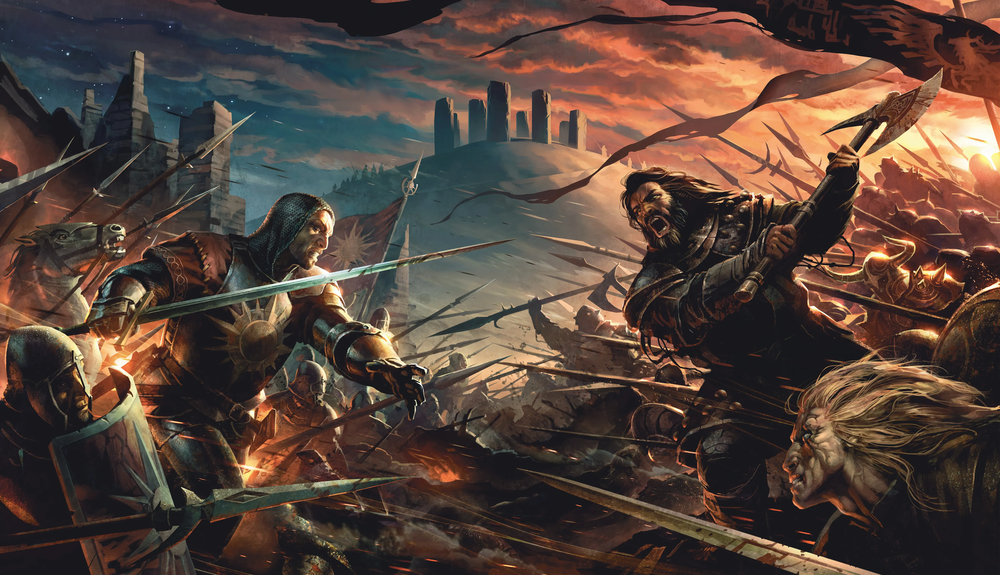

The First Law is a fantasy series written by British author Joe Abercrombie. The First Law is the title of the original trilogy in the series, but is also used to refer to the series as a whole. The full series consists of a trilogy, three stand-alone novels, short stories, and a second trilogy, titled The Age of Madness, of which the third book was published in September 2021
Joe Abercrombie
About the Author
Joe Abercrombie is a British fantasy writer and film editor. Before he pursued writing full time, he started work as a freelance TV editor. This job gave him lots of time off, and realising that he needed something more useful to do than playing video games, in 2001 he sat down once again to write an epic fantasy trilogy based around the misadventures of thinking man’s barbarian Logen Ninefingers. This time, having learned not to take himself too seriously in the six years since the first effort, the results were a great deal more interesting.
The Blade Itself, was completed in 2004. Following a heart-breaking trail of rejection at the hands of several of Britain’s foremost literary agencies, The First Law trilogy was snatched up by Gillian Redfearn of Gollancz in 2005 in a seven-figure deal (if you count the pence columns). A year later The Blade Itself was unleashed on an unsuspecting public. It now has publishers in thirty countries. The sequels, Before They are Hanged and Last Argument of Kings were published in 2007 and 2008, when Joe was a finalist for the John W. Campbell award for best new writer. Best Served Cold, a standalone book set in the same world, was published in June 2009, and a second standalone, The Heroes, came in January 2011 and made no. 3 on the Sunday Times Hardcover Bestseller List. A third standalone, Red Country, was both a Sunday Times and New York Times Hardcover Bestseller in October 2012.